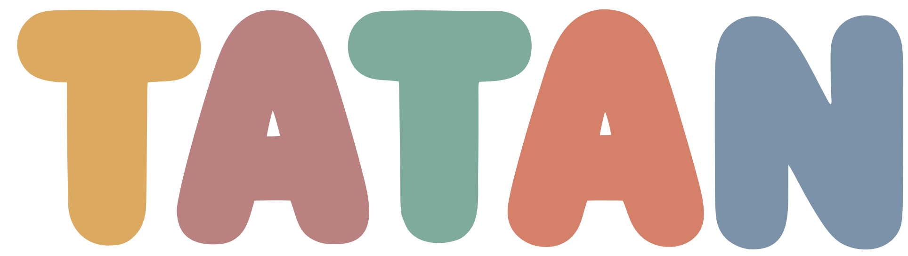

Estamos trabajando
Nuestra web está en desarrollo
Estamos preparando algo muy especial para tu bebé. Ropita y accesorios solo para bebés, producción propia 100% nacional, venta por mayor y menor. Mientras tanto, seguinos en Instagram para ver las novedades y no perderte nada.
Seguinos en @tatan26kids